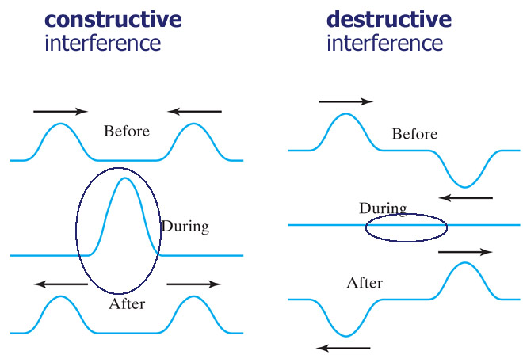

 Wave interference is the phenomenon that occurs when two waves meet while traveling along the same medium. The interference of waves causes the medium to take on a shape that results from the net effect of the two individual waves upon the particles of the medium. To begin our exploration of wave interference, consider two pulses of the same amplitude traveling in different directions along the same medium. Let's suppose that each displaced upward 1 unit at its crest and has the shape of a sine wave. As the sine pulses move towards each other, there will eventually be a moment in time when they are completely overlapped. At that moment, the resulting shape of the medium would be an upward displaced sine pulse with an amplitude of 2 units. The diagrams below depict the before and during interference snapshots of the medium for two such pulses. The individual sine pulses are drawn in red and blue and the resulting displacement of the medium is drawn in green.